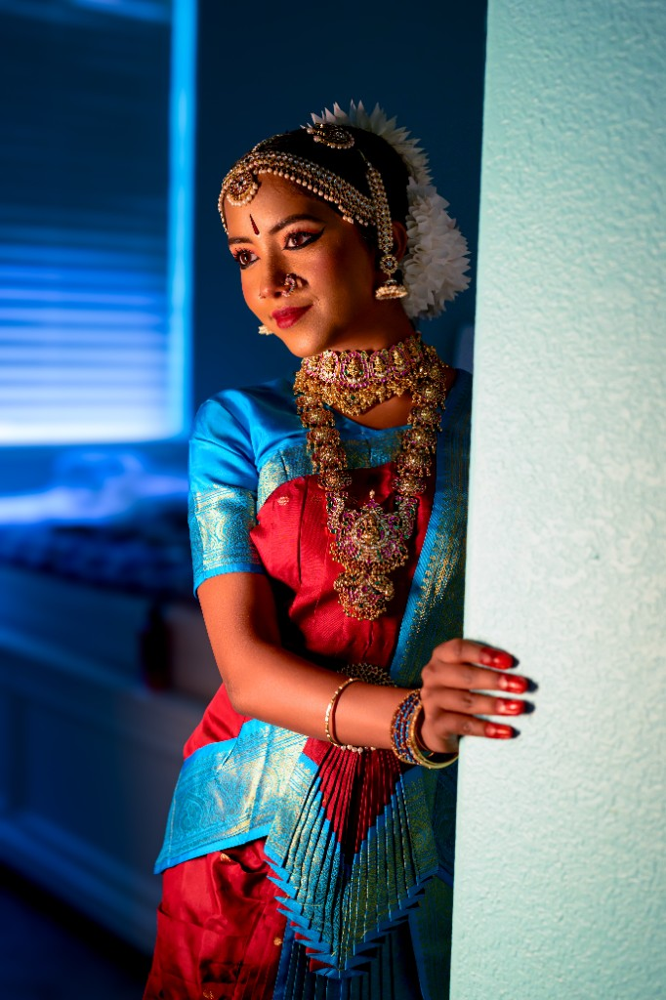

The Journey
Tanvika's journey in Bharatanatyam is a testament to passion, dedication, and an innate love for the arts. Her love affair with dance began at the tender age of five, sparked by a natural inclination toward music and movement. Long before her formal training, Tanvika's artistic spirit shone through as she joyfully practiced steps by the mirror, completely captivated by the rhythm and expression of dance.
She officially began her foundational training under the guidance of Guru Deepa Krishnan, where she built a strong technical base and nurtured her deep appreciation for classical art. In early 2023, Tanvika took the next significant step in her artistic evolution by joining Guru Chandana, under whose expert tutelage she refined her abhinaya (expression), stamina, and intricate nritta (pure dance).
Through years of unwavering commitment, early practice sessions, and countless hours in the dance studio, Tanvika has blossomed into a graceful and poised classical dancer. Her Arangetram marks a magnificent milestone in this lifelong journey—a celebration of hard work, artistic growth, and a profound devotion to the divine art of Bharatanatyam.
